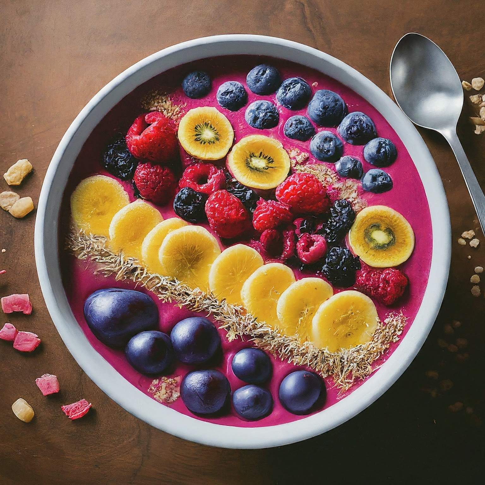

Smoothie
Ingredients:
1 cup frozen fruit (berries, mango, banana, pineapple, etc.)
½ cup liquid (milk, plant-based milk, juice, water)
1 scoop protein powder (optional)
½ banana (fresh or frozen)
Toppings (see suggestions below)
Instructions:
Blend the Base: In a blender, combine the frozen fruit, liquid, protein powder (if using), and banana. Blend until smooth and thick. You may need to add more liquid or scrape down the sides occasionally for even blending.
Assemble the Bowl: Pour the blended smoothie mixture into a bowl.
Top it Off: Here comes the fun part! Unleash your creativity with a variety of toppings. Some ideas include:
Fresh Fruit: Sliced berries, chopped mango, kiwi, pineapple, or any other fruit you enjoy.
Granola: Adds a nice textural contrast and provides healthy carbs and fiber.
Nuts and Seeds: Chopped almonds, walnuts, chia seeds, hemp seeds, or flax seeds offer a protein and healthy fat boost.
Coconut Flakes: Adds a tropical touch and some sweetness.
Dried Fruit: Raisins, chopped dates, or dried cranberries add a chewy texture and sweetness.
Nut Butters: Drizzle of peanut butter, almond butter, or cashew butter for extra protein and healthy fats.
Dark Chocolate Shavings: A decadent touch for chocolate lovers.
Fresh Herbs: A sprig of mint or chopped basil can add a refreshing twist.
Tips for Creating Your Own Smoothie Bowl:
Base Customization: Experiment with different fruits, vegetables (like spinach or kale for a green smoothie bowl!), and liquids to create your desired flavor profile. For a thicker base, use more frozen fruit or add some avocado.
Dietary Needs: Use plant-based milk and protein powder for a vegan option. For a nut-free bowl, skip nuts and nut butters and choose other toppings like sunflower seeds or pumpkin seeds.
Prepping Ahead: Freeze chopped fruits and portion out protein powder for quick and easy smoothie bowl assembly in the mornings.
Get Creative!: Don't be afraid to experiment with different flavor combinations and toppings. There are endless possibilities!